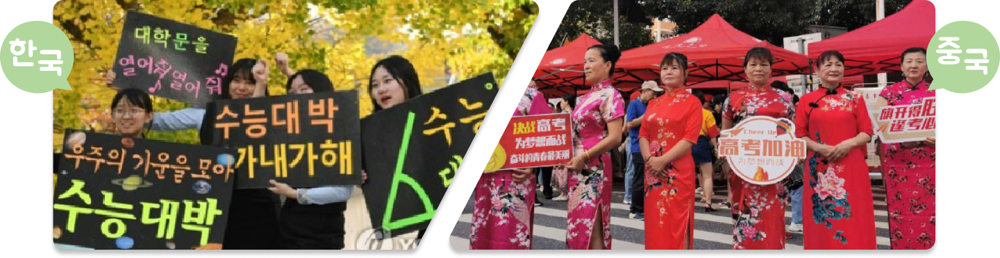

한국과 중국의 대학 입학시험을 비교해 봅시다.

시험 시기, 시험 과목, 선물, 응원 풍경
우리나라는 일반적으로 11월 셋째 주에 시험을 보는 반면 중국은 6월
7~8일로 날짜가 고정되어 있습니다. 국어, 영어, 수학 과목을 보는 것은
동일하지만 필수 과목과 선택
과목의 약간의 차이가 있습니다. 우리나라는 붙으라는 뜻으로 엿과 찹쌀떡을 선물하며, 중국은 합격하라는 기원의 의미로 粽子(zòngzi)를 선물합니다.
과목의 약간의 차이가 있습니다. 우리나라는 붙으라는 뜻으로 엿과 찹쌀떡을 선물하며, 중국은 합격하라는 기원의 의미로 粽子(zòngzi)를 선물합니다.
보충
중국과 한국의 대입 시험 비교
한국
중국
시험 시기
11월 셋째 주 목요일
6월 7~8일(날짜 고정, 요일 무관)
시험 과목
국어, 수학, 영어, 한국사, 탐구
(사탐, 과탐, 직탐), 제2외국어/한문
(사탐, 과탐, 직탐), 제2외국어/한문
국어(어문), 수학, 영어(외국어),
선택 과목(문과 종합, 이과 종합)
선택 과목(문과 종합, 이과 종합)
만점
450점
750점
합격 기원
선물
선물
엿, 찹쌀떡
(붙으라는 의미)
(붙으라는 의미)
쭝쯔
(粽子: 합격하다라는 뜻의 中과 해음)
(粽子: 합격하다라는 뜻의 中과 해음)
응원
풍경
풍경
선후배들이 피켓을 들고 응원
치파오(시작하자마자 승리라는 뜻의
旗开得胜과 해음)를 입고 응원
旗开得胜과 해음)를 입고 응원